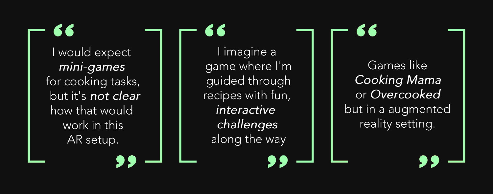
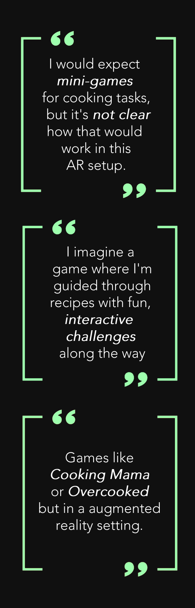

In this conceptual project, our team embarked on the journey of creating an interactive gaming experience, through the use of augmented reality (AR) to redefine user engagement and immersion.
Our AR game was designed to push the boundaries of virtual interaction, creating a space where digital and physical space can work together seamlessly. We worked to create an experience where players can interact with the game universe as naturally as they would with the physical world around them.
One of my key responsibilities was conducting comprehensive user surveys. These surveys were crucial in capturing insights about how users perceive and interact with AR technology as well as the genre of cooking simulators.
The outcome of our AR gaming project showcased my ability to effectively translate user data into actionable design insights. I was able to contribute significantly to a project that, though hypothetical, demonstrated a deep understanding of user needs in an emerging technology space.
After meeting with my group, I was able to get a better understanding of what our project's purpose and target audience were. We identified the following key focus areas:
1. Tailoring the AR experience for diverse skill levels
2. Evaluating user engagement with AR cooking mechanics
3. Understanding preference in the cuisine selection
Next, I drafted research objectives for understanding how users' varying levels of expertise with AR technology and cooking influence their engagement with our game. Additionally, I aimed to gauge the balance between educational and entertainment value in the game, and how this impacts user satisfaction and long-term engagement.
Semi-structured interviews.
I chose these types of interviews to
gain
deeper
qualitative insights from my target audience, their preferences, values, and
frustrations with the technology.
User Surveys.
I chose this method to gain a greater understanding of
the
game's broader appeal
and usability across a diverse user demographic.
During the research phase, I engaged with a wide array of participants with diverse cultural backgrounds, including AR enthusiasts, gamers, and casual/competitive gamers. I recruited:
Users generally anticipated a specific gameplay style, similar to traditional games in the 'cooking' genre.
 To identify user expectations, I asked users to tell me what they envisioned this game should be like. A significant number of users expressed their expectations for the implementation of mini-games, associating the cooking genre with more interactive, gamified elements. This feedback highlighted a disconnect between our initial concept and user assumptions.
User surveys revealed a preference for a more casual gaming environment, contrasting with our initial direction towards competitive gaming. This forced the team and I to take a step back and reassess our design strategy, focusing on creating a more relaxed and user-friendly experience that aligns with the audience's preferences.
To address this challenge, I reconvened with the team and we concluded that the optimal approach would be to find a middle ground between our original concept and the users' expectations. This involved incorporating more gamified elements into the realistic cooking environment we had envisioned.
Ultimately, this strategic compromise led to the creation of a blueprint for a more engaging user experience, one that maintained the authenticity of a cooking simulator while enhancing its appeal through interactive gaming features.
In response to the insights gained from user surveys, I collaborated with the team to shift our focus from a competitive gameplay model to a more casual and relaxed one. This pivot meant reimagining our game to better suit the preferences for a laid-back, enjoyable experience, leading us to design a framework that emphasized ease of play and user enjoyment, while moving away from the high-stakes competitive elements initially planned.
I greatly enjoyed this project and learned a lot about how the user influences product development.
I believe what makes a product effective is being able to find that balance between my creative vision and the user's expectations. By conducting user surveys and interviews, I was better able to align the objective of the project with the actual needs and preferences of our target audience. This is crucial in ensuring that the product not only fulfills its intended purpose but also resonates deeply with users.
The design process is iterative and ongoing, especially in game development when adapting to rapidly changing technology trends and user preferences. Continuous testing and feedback are vital to refine the product and keep it aligned with user needs, ensuring that the game not only meets but anticipates the evolving expectations and experiences of its audience.
For a game like this, with practical applications, striking the right balance between entertainment and providing potential educational value is a delicate and important aspect of design. This equilibrium is essential to ensure that while the game remains fun and engaging, it also effectively imparts useful skills and knowledge, thereby enhancing the overall value and appeal of the user experience.